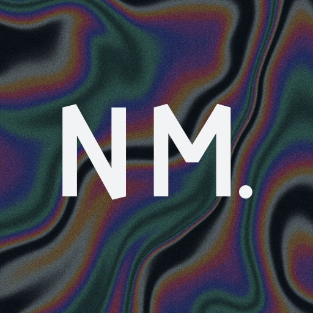
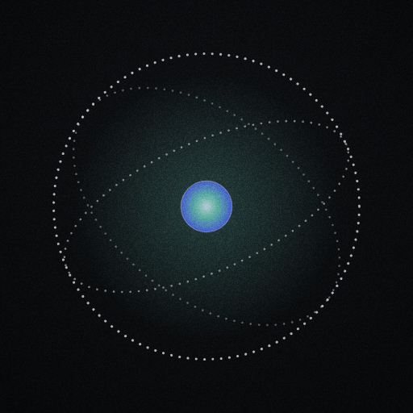

v1 — Plateavatar-v1.pngMonograma centrado sobre center-crop del warp + velo 60% (equivalente al actual).

crop circular
v2 — Orbitavatar-v2.pngMonograma sobre carbón + anillo orbital espectral fino (eco FieldCanvas orbit).
v3 — Core-orbavatar-v3.pngCore-orb sin letras — identidad por forma.

crop circular